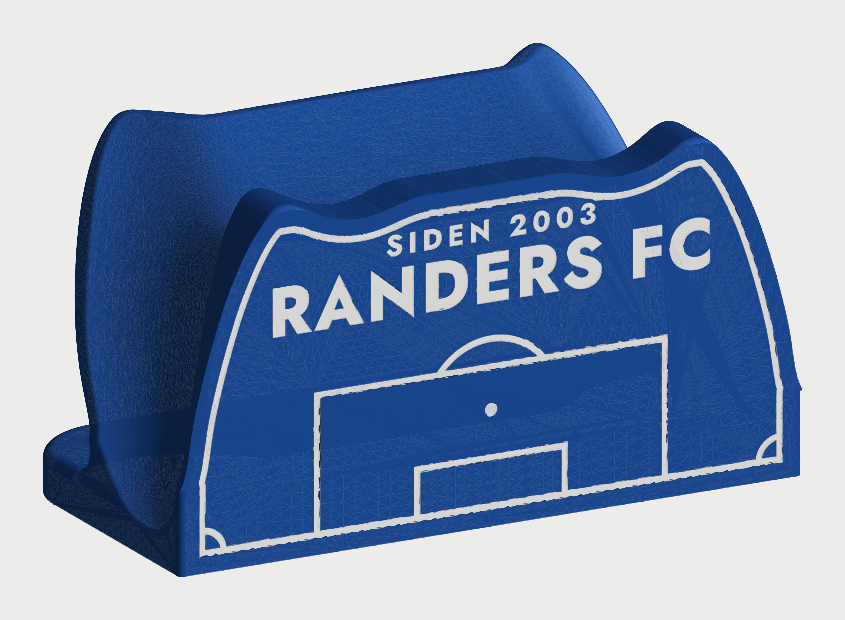
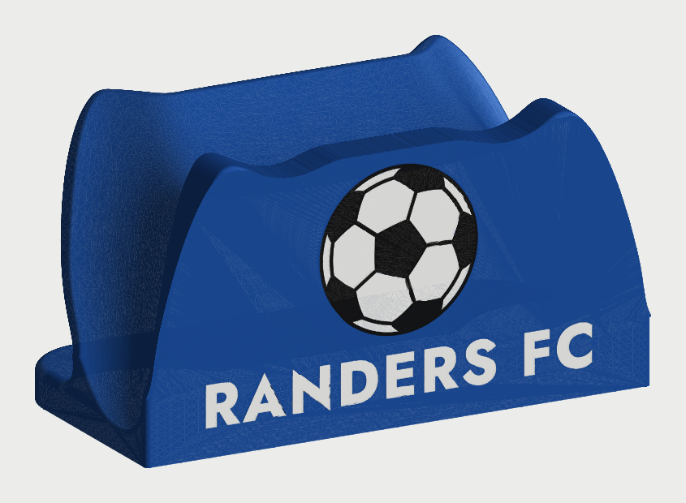
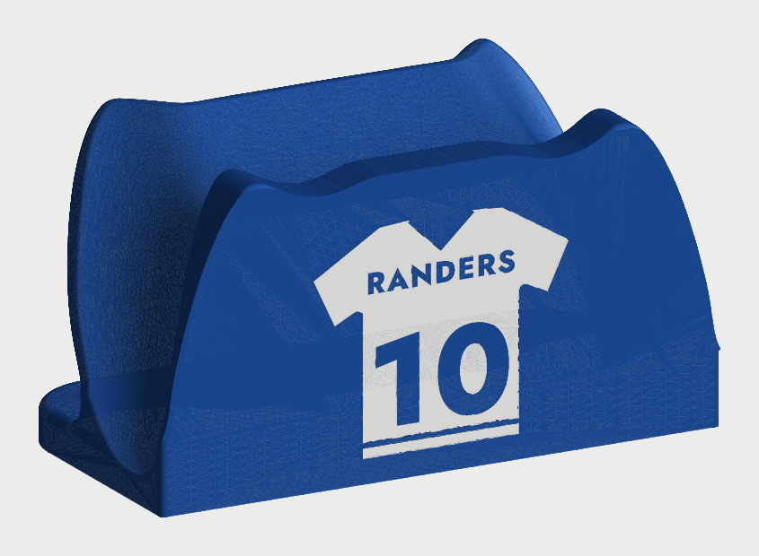
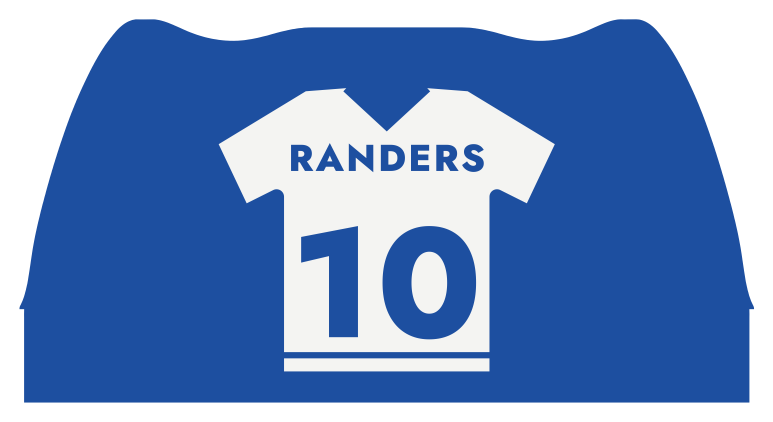

Forsiden set lige forfra
Bane 2 farver
Forsiden er en fodboldbane set fra målet. Kridtstregerne følger standerens kant, og straffesparksfeltet, målfeltet, buen og hjørnerne sidder nederst. Over feltet står RANDERS FC og SIDEN 2003.
- Udtryk
- Stadion, rent og grafisk
- Mest
- Blå, med tynde hvide streger
- Print
- Stregerne er 1,2 mm brede (3 baner)


Forsiden set lige forfra
Bold 3 farver
En klassisk fodbold med sorte femkanter og hvide sekskanter, Ø 37 mm, midt på forsiden. Under den står RANDERS FC med store hvide bogstaver.
- Udtryk
- Kraftigt og legende
- Mest
- Blå, med en sort og hvid bold
- Print
- Sømmene er 0,8 mm. Kræver tre farver i AMS


Forsiden set lige forfra
Trøje 2 farver
En hvid spillertrøje med V-hals og striber på ærmer og kant. RANDERS og nummer 10 står i blåt, fordi standerens blå farve ses igennem. Nummeret kan skiftes, fx til ejerens yndlingsspiller.
- Udtryk
- Personligt, som en fantrøje
- Mest
- Blå, med en stor hvid flade
- Print
- Nummeret er ca. 18 mm højt